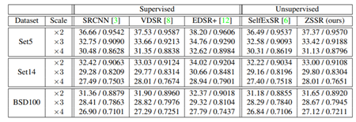

“Zero-Shot” Super-Resolution using Deep Internal Learning (CVPR 2018)
Motivation:
1.传统SR方法会在测试数据满足训练数据的一些条件时（ideal），有着极好的效果，但是如果测试数据没有满足约束时（no-ideal），效果会很差。
Model:
1.ZSSR是在test的同时训练的，但是因为网络结构小，因此和SotA supervised CNNs相比test的时间相差不多
2.理论基础：“the internal entropy of patches inside a single image is much smaller than the external entropy of patches in a general collection of natural images”
因此不选用训练集训练模型，而选用单张图片进行ZSSR
3.对于测试图片I，先进行下采样得到Is，随后选用（I，Is）作为训练集来进行模型训练
4.在传统数据集上，效果不显著；no-ideal测试集上效果显著

Advantage:
1.针对测试图片来训练模型，提高模型的实用性
Disadvantage
1.ZSSR方法更容易生成图像内部已有的类似信息，而通过外部训练数据学习的超分辨算法，如EDSR+，更易学习到图像外部信息
Recovering Realistic Texture in Image Super-resolution by Deep Spatial Feature Transform(CVPR 2018）
Motivation:
1.实际应用中，许多物体在低分辨率下非常相似，例如左图中的墙壁与植物，如果不提前加语义信息，则很难复原真实细节
Model:
1.整体思路与SROBB类似，同样是根据分割结果来进行优化。不同之处在于，作者在特征提取阶段便考虑到分割信息，而SROBB仅在最终loss处考虑
Advantage:
1.加入分割模型有针对性地提取信息，凸显细节
Disadvantage
1.没有使用content loss
Zoom to Learn, Learn to Zoom (CVPR 2019)
Motivation:
1.现有的基于学习的超分辨率方法不使用真实的传感器数据，而是对经过处理的RGB图像进行操作
2.通过对高分辨率RGB图像重新采样来合成传感器数据是对真实传感器数据和噪声的一种过于简化的近似，间接降低了输入中的噪声水平，导致图像质量较差
Model:
1.每个场景的7个光学变焦设置下采集了7幅图像
2.Contextual Bilateral Loss：contextual loss不考虑像素点之间的空间信息，因此造成很多不准确的特征匹配。因此作者将空间区域也加入到损失函数中。
3.最终损失函数如下，类似content loss+ perceptual loss：
Advantage:
1.使用RAW进行超分，相比经过ISP处理的JPG，RAW有丰富的信息
2.提出CoBi Loss解决不对齐的问题
3.为真实的计算变焦提供一个数据集SR-RAW